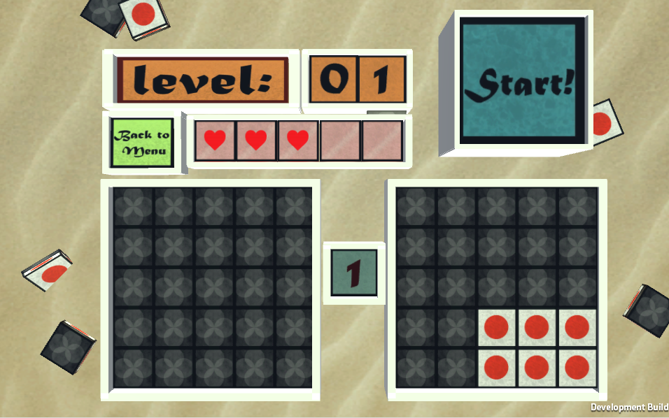
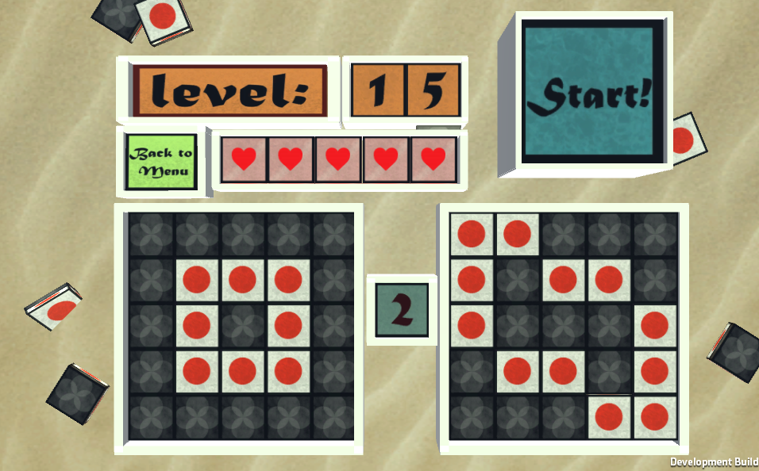
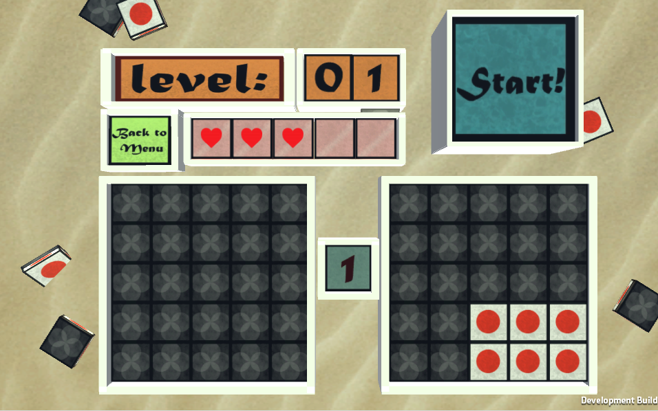
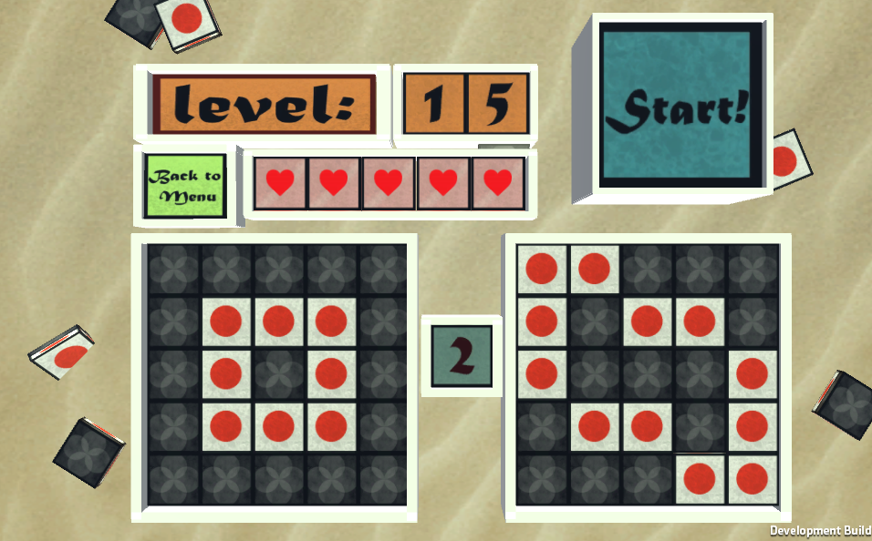

Correct the field
Info
Type game: Unity3D(C#)
Platform: Web
Team: 1 Developer (personal project)
Time: spare time
Date: December 2015
Play: click here
Description
This personal project started when I wanted to learn more about 2D arrays and grid systems. So I decided to make a puzzle game based on the mini game: "Puzzle Panic".
I realized with this project that creating the core gameplay is just the half work, because I spent more time on making the UI and getting the little things right.
My role
-Game programmed
-Drew art
Game features:
-Random generated puzzels.
-Dificulty rises with more complex puzzels as you get to the next level.
-Life system.
-Goes up to level 99. (if you make it that far)
Screenshots
 


